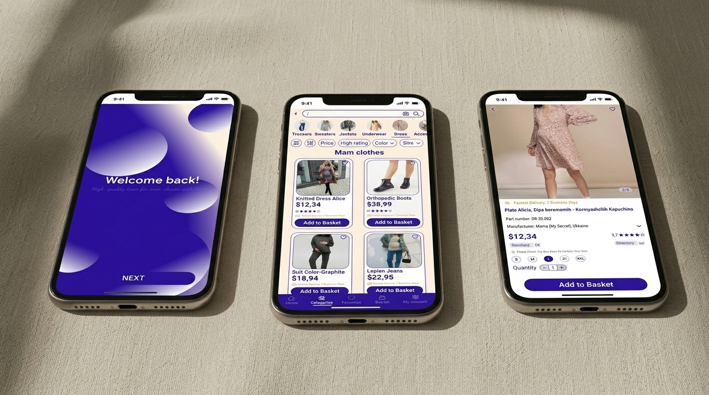
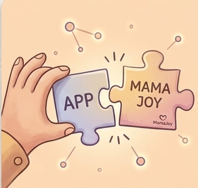
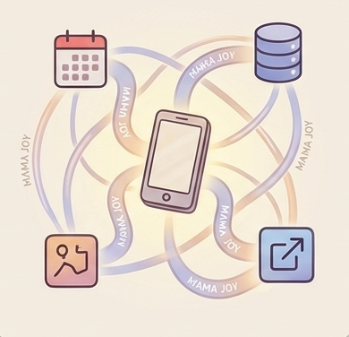
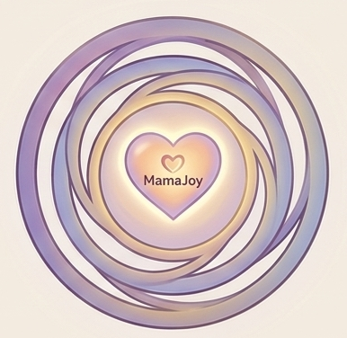
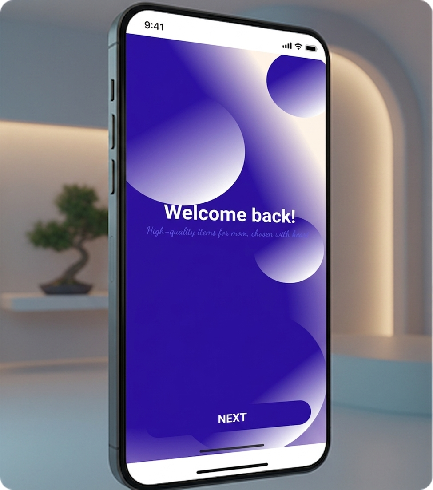
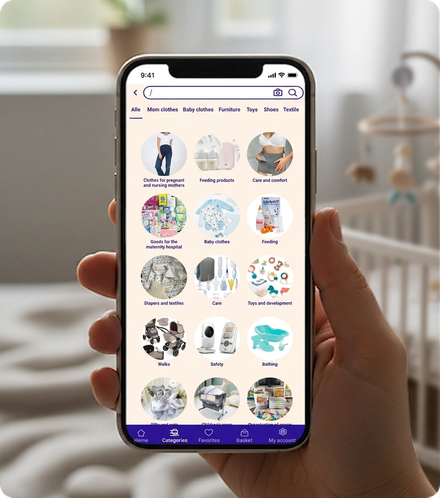
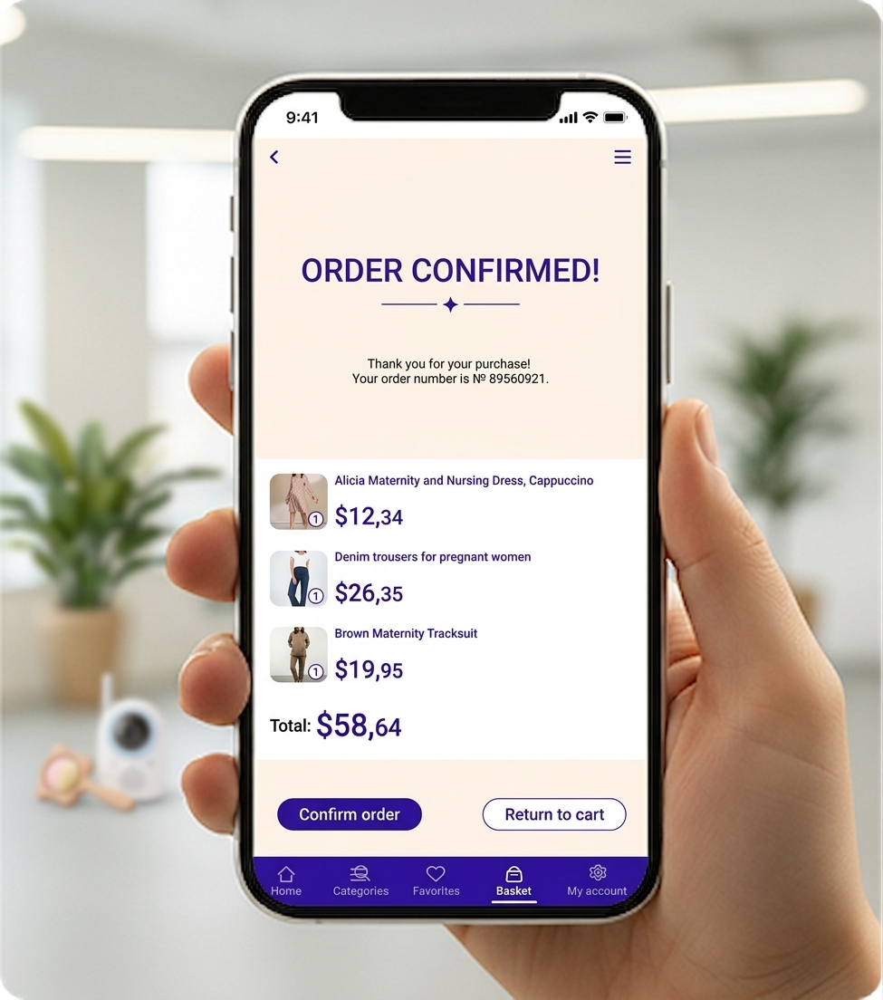
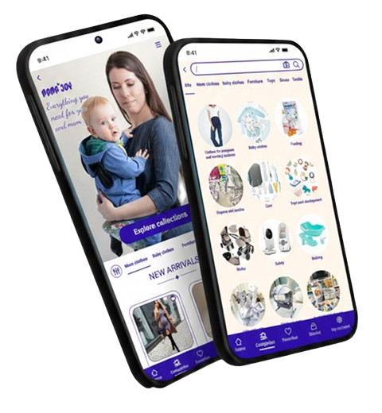

MamaJoy — мобильное приложение онлайн-магазина, созданного для мам и их малышей до 2 лет.
Разработка интуитивного мобильного сервиса, помогающего беременным женщинам и родителям детей до 2 лет, созданный для комфортного подбора товаров, снижения когнитивной нагрузки и простой интеграции заботы о себе и ребенке в ежедневную рутину.
РольLead UX/UI Designer
Сроки3 месяца (2025)
ИнструментыFigma, FigJam / Miro, VS Code
ПлатформаiOS & Android

О проекте
Молодые мамы часто сталкиваются с проблемой перегруженности и путаницы в онлайн-магазинах. Поиск подходящей детской одежды занимает много времени, даже несмотря на короткую продолжительность жизни. Для стартапа это усугубляется ограниченным бюджетом и необходимостью сосредоточиться на MVP (минимально жизнеспособном продукте).
Был разработан MVP мобильного приложения для электронной коммерции с простым и интуитивно понятным пользовательским интерфейсом для мам и малышей. Приложение фокусируется на основных функциях, таких как поиск, фильтры, избранное и покупка, обеспечивая тем самым быстрый и удобный процесс покупок.
Проблема и боли пользователей
Проблемы и боли пользователей MamaJoy
В процессе анализа конкурентов на рынке Германии и проведения глубинных интервью с беременными женщинами и молодыми мамами мы выявили ключевые барьеры, превращающие онлайн-шопинг в источник дополнительного стресса:
Сложная навигация и запутанный путь к покупке
Пользователям приходится тратить слишком много времени и делать избыточное количество кликов, чтобы просто найти нужный товар (например, «витамины для 2-го триместра» или «слипы для новорожденных») и оформить заказ. В условиях, когда у мамы есть всего пара свободных минут, пока ребенок спит, длинные сценарии с обязательной регистрацией становятся критическим препятствием.
Отсутствие персонализации и поддержки
Существующие площадки предлагают стандартный, огромный каталог товаров, не учитывая текущий этап материнства. Беременная женщина на 12-й неделе видит ту же выдачу, что и мама полугодовалого малыша. Это вынуждает пользователей самостоятельно фильтровать тысячи позиций, вызывая чувство растерянности и неуверенности в правильности выбора, особенно у тех, кто ждет первого ребенка.
Визуально перегруженный интерфейс и информационный шум
Яркие агрессивные цвета, обилие баннеров, всплывающих уведомлений, рекламы и избыточной технической информации вызывают у пользователей дополнительный стресс и чувство тревоги. Интерфейс большинства конкурентов не воспринимается как поддерживающее и спокойное пространство, необходимое женщине в этот чуткий период жизни.
Глубинное исследование
Для валидации гипотез и точного понимания потребностей беременных женщин и молодых мам на рынке Германии мы провели комплексное исследование, сочетающее качественные и количественные методы.
12
Глубинных интервью
Позволили выявить скрытые мотивы, страхи и реальные барьеры при выборе и покупке товаров для себя и малыша. Мы поняли, как дефицит времени и когнитивная нагрузка влияют на принятие решений.
150+
Ответов на онлайн-опрос
Помогли собрать статистику об отношении к существующим интернет-магазинам, частоте покупок, предпочтительным способам доставки и готовности использовать поддерживающие функции приложения.
3
Ключевых конкурента
Подробно проанализированы с точки зрения пользовательского опыта (UX), функционала, ассортиментной политики и визуального языка для поиска рыночных ниш и конкурентных преимуществ.
Анализ конкурентных решений
В ходе анализа конкурентов мы сосредоточились на изучении пользовательского пути (User Journey) в крупнейших e-commerce и контентных платформах для мам в Германии.
Персонажи (User Personas)
На основе паттернов поведения мы вывели два ключевых архетипа пользователей.
Мария, 29
Будущая молодая мама
Статус:
Первая беременность, живёт в Берлине, работает дизайнером удалённо.
Цели:
Найти удобную одежду для растущего живота, подготовить базовый «роддом-набор», оформить всё онлайн.
Боли:
Нет времени ходить по магазинам, раздражает длинный процесс регистрации, боится ошибиться с размерами.
Поведение:
Заказывает почти всё со смартфона, читает отзывы в Instagram, предпочитает быструю оплату (Apple Pay/PayPal).
Анна, 33
Молодая мама
Статус:
Мама 8-месячного мальчика, живёт в Гамбурге.
Цели:
Купить детскую одежду и расходники (подгузники, крем) в пару кликов, иногда берёт подарки для подруг-мам.
Боли:
Ограниченное время, хочет простую фильтрацию по возрасту и готовые подборки «must-have».
Поведение:
Оформляет заказы с телефона, ценит опцию «гостевой» покупки без сложного аккаунта, активно использует PayPal и быструю доставку DHL.
Путь пользователя (User Flow)
Интерфейс сокращает путь от запуска до подтверждения покупки.
01Персонализированный запуск
02Актуальный дашборд
03Умная рекомендация
04Мгновенный выбор
05Быстрый Checkout
06Мягкий трекинг заказа
Лоу-фай прототипы и итерации
Для проверки гипотез мы спроектировали и протестировали три итерации структуры главного экрана. Тестирование проводилось на реальных пользователях целевой аудитории (Германия) с помощью тестов кликов (Click Tests) в Figma и юзабилити-тестов (Usability Tests) в Maze.

Итерация 1: Плиточная структура (Grid)
Слишком большое количество категорий товаров (Памперсы, Одежда, Витамины, Игрушки) на первом экране рассеивало внимание и вызывало чувство растерянности.

Итерация 2: Вертикальный список (List)
Улучшение, но... Вертикальный скролл улучшил восприятие информации, но пользователи тратили слишком много времени на прокрутку длинного списка, чтобы найти нужную категорию. Фокус на быстрой покупке терялся.

Итерация 3: Финальный фокус (Focus on You)
Успех: На главный экран вынесли персонализированную ленту «Вам сейчас необходимо» на основе срока беременности или возраста ребенка. Это действие — запуск персонализированной подборки — стало центральным и самым кликабельным.
Айдентика и визуальный язык
Спокойная природная палитра и чистые округлые формы подчеркивают ощущение гармонии и ясности.
Цветовые решения
Fast Weiß / Hellgrau
Sehr helles Grau
Cremiges Beige
Cremiges Beige
Компоненты интерфейса
Card
Bank Transfer
DirectoryLU
StandardDE
High ratingSize
Mom clothes
Mom clothes
Trousers
Trousers
Финальный UI-дизайн
Эстетика лаконичности с акцентом на заботу и польза с первого экрана. Спокойная цветовая палитра и продуманная типографика снижают когнитивную нагрузку в чуткий период жизни.

01. Стартовый экран
Персонализированный приветственный экран и быстрый онбординг с адаптацией под текущий срок беременности или возраст ребенка.

02. Умный каталог
Визуально понятные категории и структурированная выдача товаров для ускорения поиска без лишнего информационного шума.

03. Быстрый Checkout
Прозрачное подтверждение заказа в пару кликов с мгновенной информацией о составе покупки и сроках доставки.
Интерактивное взаимодействие
Мы уделили особое внимание микроанимациям: гладкому скроллу категорий, отзывчивым карточкам и бесшовному переходу к оформлению покупки.
Интуитивная навигация как ядро UX
Интерактивные элементы каталога мгновенно реагируют на касания: быстрый просмотр категорий, наглядный сброс фильтров и динамическая корзина позволяют маме совершать покупки легко и без лишних действий даже одной рукой.
✓ Подтверждено пользовательским тестированием

Ключевые инсайты
Доверие повышает средний чек
Фокус на поддержке, а не на агрессивных продажах, позволяет строить долгосрочные отношения. Лояльность к платформе MamaJoy конвертируется в более высокие показатели возвращаемости и выручки.
Снижение когнитивной нагрузки
Экосистема, объединяющая товары, контент и поддержку, воспринимается как единый сервис. Это создает сильное конкурентное преимущество и увеличивает ценность подписки или повторных покупок.
Фокус на технологии и персонализации
Этот вариант подчеркивает технологическую сторону продукта и то, как данные используются для улучшения опыта.